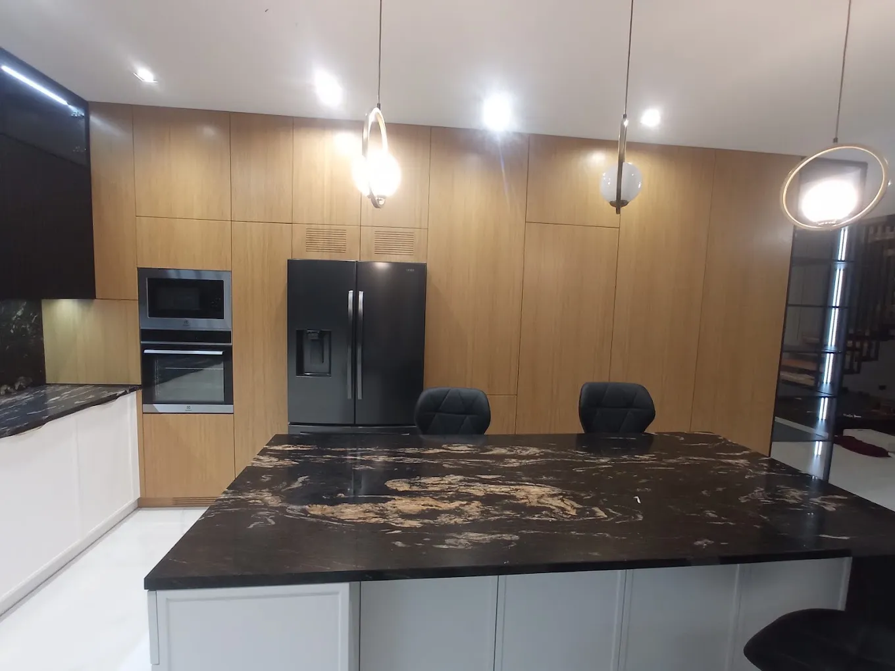
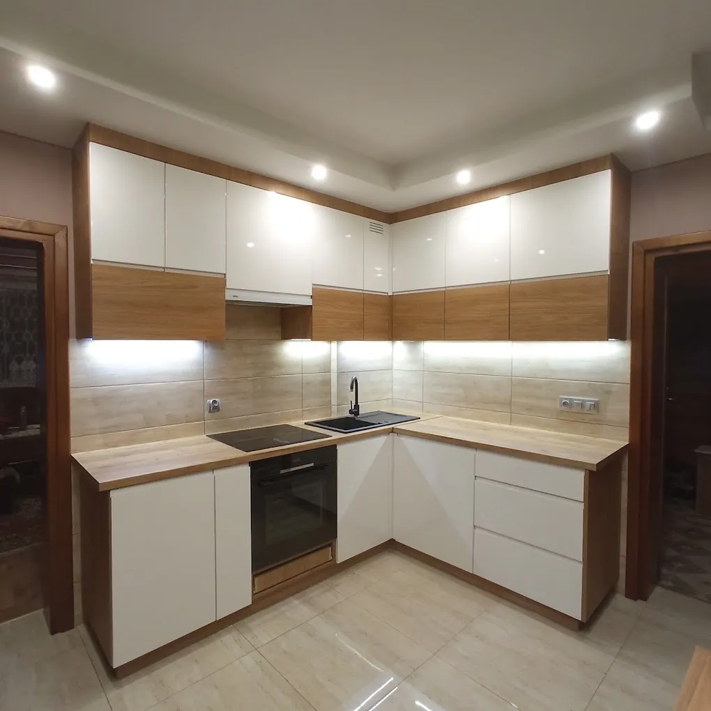
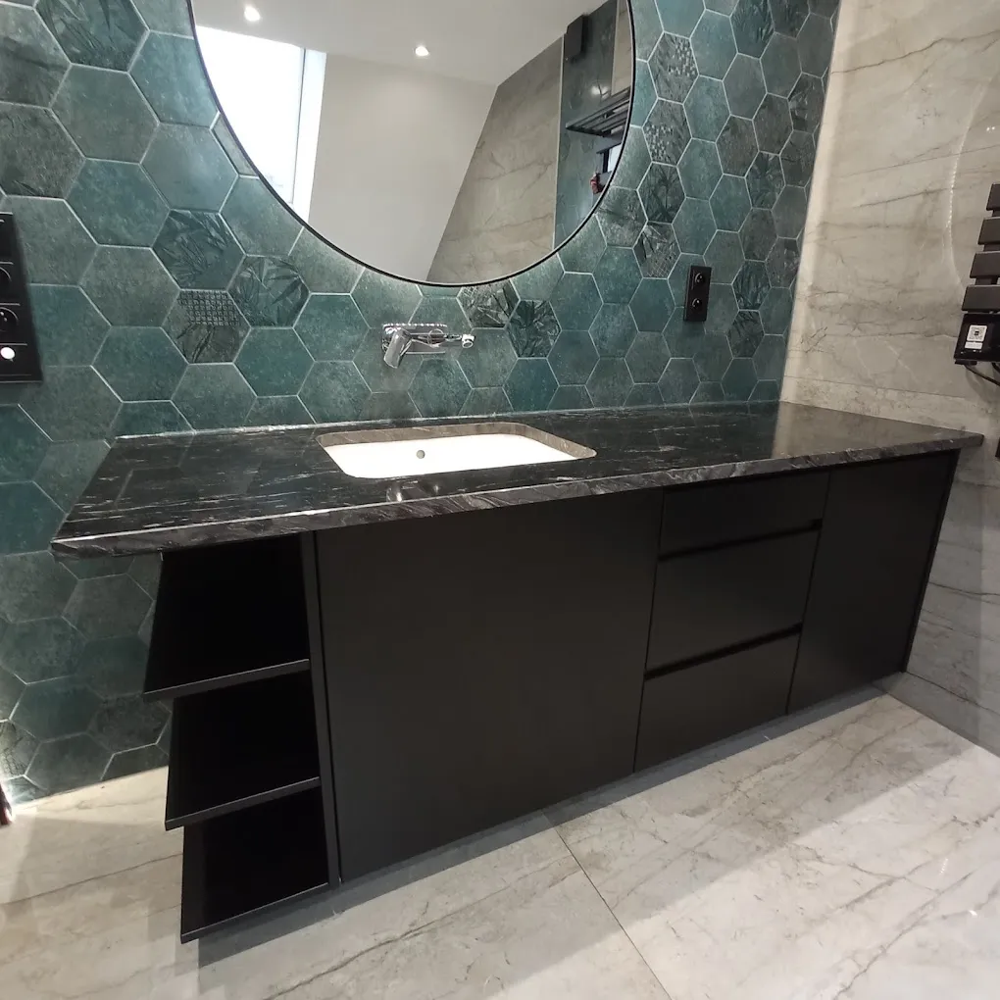
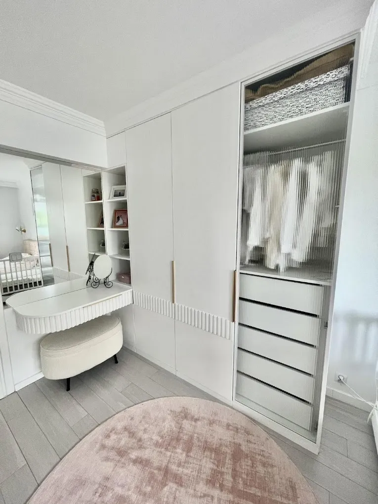
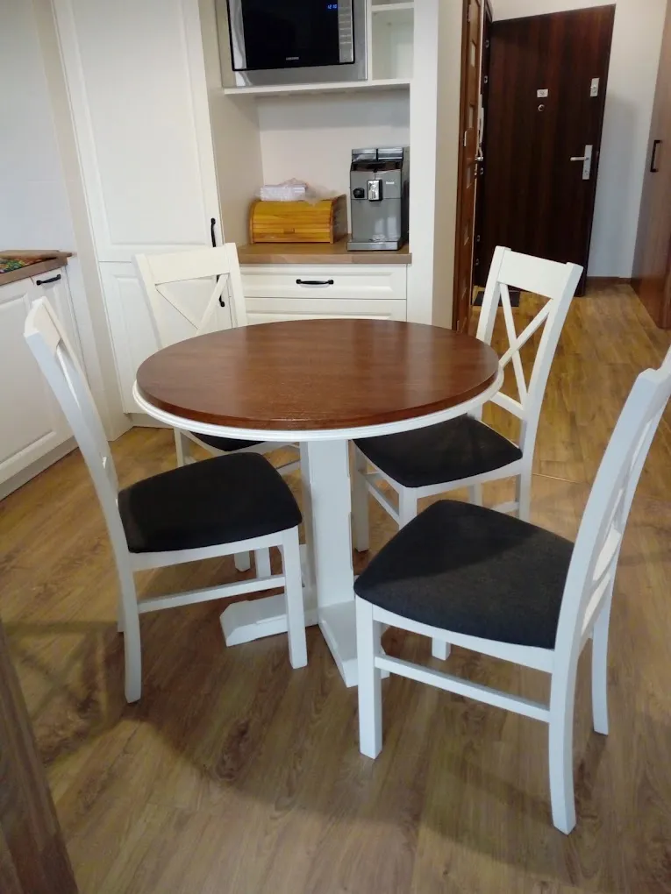

Wymarzone meble na wymiar.
Kuchnie, łazienki, szafy i meble biurowe na zamówienie. Projektujemy, wykonujemy i montujemy sami, z pracowni w Malinie.
- ★★★★★5,0 w Google
- Pn - Sb, 7:00 - 17:00
- Malinie 53

Co dla Ciebie wykonamy
Każdy mebel powstaje od zera, pod konkretne pomieszczenie. Bez gotowych modułów i bez dopasowywania na siłę.

Meble kuchenne
Zabudowy narożne, wyspy i półwyspy, sprzęt w zabudowie i podświetlenie blatu. Kuchnia ustawiona pod to, jak w niej gotujesz.
Szczegóły
Meble łazienkowe
Szafki pod umywalkę, słupki i zabudowy stelaża z podświetlaną wnęką.
Szczegóły
Szafy i garderoby
Od podłogi do sufitu, z wnętrzem rozplanowanym pod Twoje ubrania.
SzczegółyMeble biurowe
Biurka, regały i szafy na dokumenty do domowego gabinetu albo firmy.
Szczegóły
Drewno naturalne
Meble z litego drewna dla tych, którzy chcą materiału na lata.
SzczegółyOd pomiaru do ostatniej śrubki
Cały proces prowadzi jedna osoba. Wiesz, z kim rozmawiasz, i nikt nie przerzuca Twojego zlecenia dalej.
-
Pomiar u Ciebie
Przyjeżdżamy, mierzymy pomieszczenie i rozmawiamy o tym, czego potrzebujesz na co dzień.
-
Projekt i wycena
Dobieramy układ, fronty, blaty i okucia. Dostajesz konkretną cenę, zanim cokolwiek zostanie wycięte.
-
Wykonanie w pracowni
Meble powstają w naszej pracowni w Malinie, pod wymiary z Twojego domu.
-
Montaż na miejscu
Montujemy, regulujemy fronty i zostawiamy porządek. Punktualnie, tak jak się umówiliśmy.
Realizacje
Zdjęcia z domów naszych klientów, robione po montażu. Kliknij, żeby powiększyć.
Co mówią klienci
Klienci zaznaczają w opiniach:
- Jakość
- Profesjonalizm
- Punktualność
- Czas reakcji
- Stosunek jakości do ceny
„Polecam współpracę z Tomaszem, rzetelny i profesjonalny wykonawca mebli na zamówienie.”
„Bardzo dobra jakość wykonania i montaż. Polecam pana Tomasza.”
„Polecam serdecznie.”
Usługi: montaż mebli, projektowanie i wykonywanie szafek.
Porozmawiajmy o Twoich meblach
Najszybciej przez telefon. Powiedz, jakie pomieszczenie chcesz urządzić, a umówimy się na pomiar.
- Poniedziałek7:00 - 17:00
- Wtorek7:00 - 17:00
- Środa7:00 - 17:00
- Czwartek7:00 - 17:00
- Piątek7:00 - 17:00
- Sobota7:00 - 17:00
- NiedzielaZamknięte